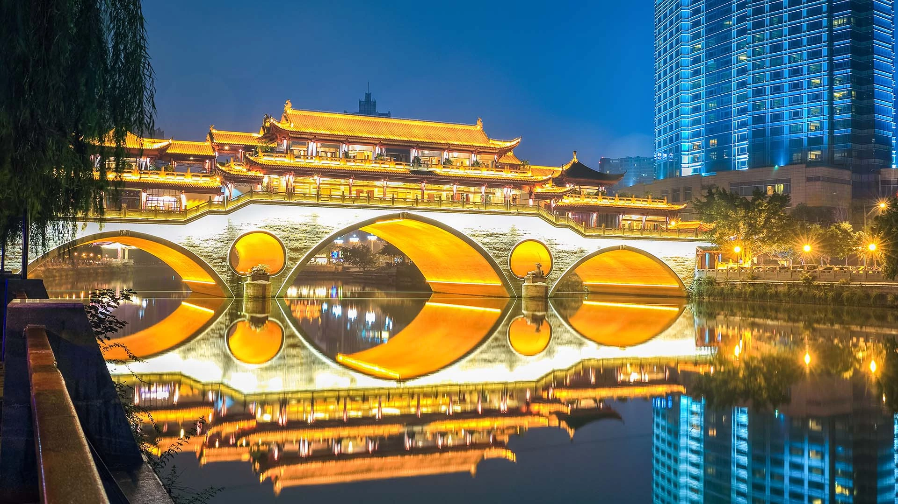

Ruta: Shanghái (PVG) → Chengdú (CTU)
Fechas: 18 Jul - 25 Jul 2026
Precio: $159 USD / ¥1,088 CNY
Tipo: Ida y Vuelta
Duración estimada: 3h 05min
Chengdú es famosa por su ambiente relajado, su deliciosa gastronomía picante y por ser hogar del panda gigante. Es ideal para quienes buscan cultura y naturaleza.